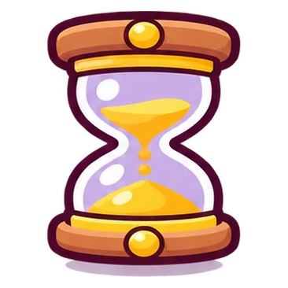

테스트 창
모둠 수
4
5
6
문제 수
5
10
15
학생 탭
1
2
3
대
나머지 자리는 가상 학생
빠르게 (시간 1/5)
테스트 시작
이 창은 실제 수업과 상관없어요. 기록은 이 컴퓨터에만 남아요.
따로 열기:
교사 화면
학생 화면
게임 설명 창
교사 화면 (TV)
여기서 [시작!] · [다음] 버튼을 눌러 진행해요
위에서 [테스트 시작]을 누르면
교사 화면과 학생 탭이 함께 열려요
학생 탭 (갤럭시탭)
직접 눌러서 답하고 땅을 골라 봐요